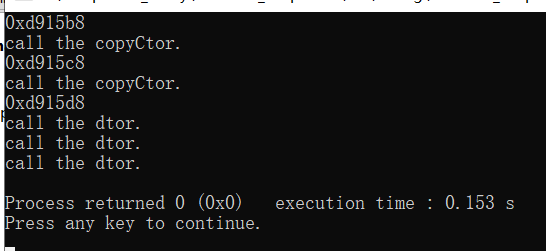
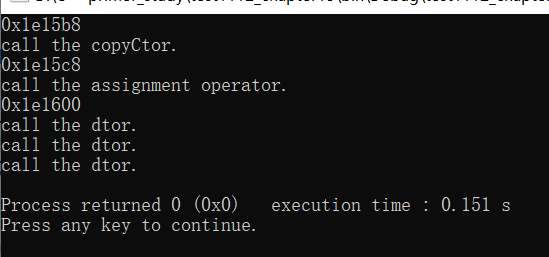

今天在学习拷贝析构的时候遇到的问题：
1 #include <iostream>
2 using std::cout; using std::cin; using std::endl;
3 #include "HasPtr.h"
4
5 int main()
6 {
7 HasPtr ha("Halo");
8 cout<<ha.getPs()<<endl;
9 HasPtr copy_ha(ha);
10 cout<<copy_ha.getPs()<<endl;
11 HasPtr assign_ha;
12 //HasPtr assign_ha = ha;
13 assign_ha = ha;
14 cout<<assign_ha.getPs()<<endl;
15 return 0;
16 }如果按照第12行那样写的话就是初始化过程，这样的话是不会调用重载的拷贝赋值运算符，而是调用拷贝构造函数。如果按照第11和13行这样写，第13行是赋值操作，所以会调用重载的拷贝赋值运算符。以下是运行结果（图1是直接初始化，图二是先定义assign_ha然后赋值。）：


下面是类的头文件和实现：
1 //HasPtr.h
2 #ifndef HASPTR_H
3 #define HASPTR_H
4
5 #include <iostream>
6 #include <string>
7
8 class HasPtr
9 {
10 public:
11 HasPtr(const std::string& s = std::string()) : ps(new std::string(s)), i(0) { }
12 HasPtr(const HasPtr&);
13 std::string* getPs() const { return ps; } //由于原本就不可以对私有成员进行操作，所以不必返回引用
14 int getI() const { return i; }
15 HasPtr& operator=(const HasPtr&);
16 ~HasPtr();
17 private:
18 std::string *ps;
19 int i;
20 };
21
22 #endif // HASPTR_H 1 //HasPtr.cpp
2 #include "HasPtr.h"
3
4 HasPtr::HasPtr(const HasPtr& h)
5 {
6 ps = new std::string(*(h.ps));
7 i = h.i;
8 std::cout<<"call the copyCtor."<<std::endl;
9 }
10
11 HasPtr::~HasPtr()
12 {
13 std::cout<<"call the dtor."<<std::endl;
14 delete ps;
15 }
16
17 HasPtr& HasPtr::operator= (const HasPtr& rhs)
18 {
19 std::cout<<"call the assignment operator."<<std::endl;
20 ps = new std::string(*(rhs.ps));
21 i = rhs.i;
22 return *this;
23 }